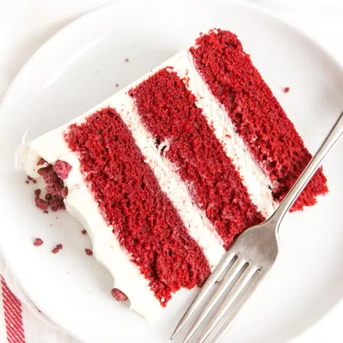

Red velvet cake is traditionally a red, red-brown, crimson, or scarlet-colored layer cake, layered with ermine icing. Traditional recipes do not use food coloring, with the red color due to non-Dutched, anthocyanin-rich cocoa.